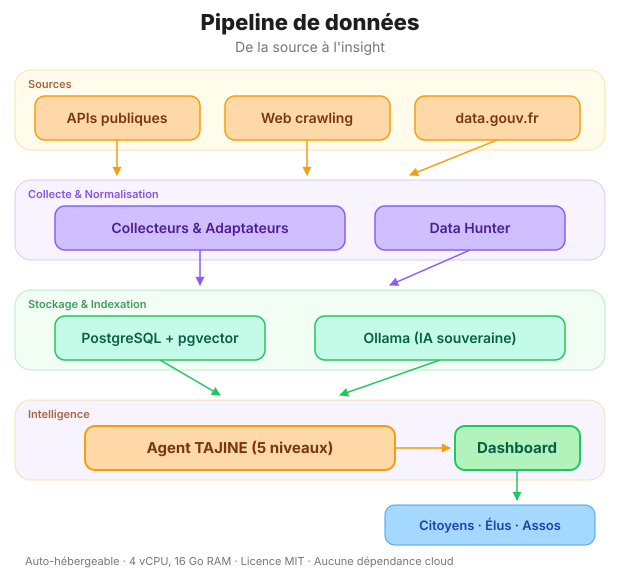

Ce qui fonctionne aujourd'hui
Tawiza n'est pas un concept. C'est un outil qui produit déjà des analyses. Voici ce qui est opérationnel.
Site statique avec analyses sourcées
Chaque analyse publiée sur tawiza.fr est un document HTML autonome, avec des graphiques interactifs et des sources vérifiables. Pas de framework lourd, pas de base de données : du HTML, du CSS, du JavaScript.
Collecte manuelle de données publiques
Les données sont collectées manuellement depuis les portails publics : INSEE (recensement, emploi, revenus), DVF (transactions immobilières), BODACC (annonces légales), SIRENE (entreprises), France Travail (demandeurs d'emploi). Chaque source est citée et vérifiable.
Graphiques et visualisations interactives
Les analyses intègrent des graphiques D3.js interactifs : barres comparatives, cartes, courbes d'évolution. Chaque visualisation est construite à partir des données brutes, sans intermédiaire opaque.
Code source ouvert
Tout le code est sur GitHub sous licence MIT. N'importe qui peut vérifier les méthodes, reproduire les analyses, proposer des corrections. La transparence n'est pas un slogan, c'est le fonctionnement par défaut.
Un outil utile aujourd'hui vaut mieux qu'un outil parfait jamais livré. On publie ce qui marche, on construit le reste en public.
Ce qu'on construit
L'objectif est d'automatiser la collecte, d'enrichir les données par croisement entre sources, et de rendre l'analyse accessible via un agent IA local. Voici l'architecture cible.
Architecture cible du pipeline

Le pipeline en détail
1. Collecte multi-sources automatisée
Chaque API gouvernementale est encapsulée dans un connecteur indépendant. Rate limiting intelligent, cache distribué, gestion des erreurs gracieuse. Le Data Hunter complète avec du crawling ciblé sur les sources web territoriales.
2. Normalisation et enrichissement
Les données brutes sont nettoyées, géocodées, normalisées au référentiel COG (Code Officiel Géographique). Croisement automatique entre sources : une entreprise SIRENE est liée à ses annonces BODACC, ses marchés BOAMP, ses données DVF.
3. Stockage vectoriel et sémantique
Les données sont stockées dans PostgreSQL avec l'extension pgvector pour la recherche sémantique. Chaque document territorial est transformé en embedding vectoriel, permettant des requêtes en langage naturel : « quelles communes du Pas-de-Calais perdent des entreprises ? ».
4. Analyse cognitive (TAJINE)
L'agent TAJINE opère sur 5 niveaux cognitifs : constat factuel, analyse de tendances, corrélation inter-sources, projection de scénarios, recommandation d'action. Pipeline ReAct avec des outils spécialisés par domaine. IA 100% locale via Ollama.
5. Visualisation et restitution
Les résultats sont présentés dans un dashboard interactif : cartes choroplèthes, graphiques D3.js, tableaux de bord par territoire. L'objectif : qu'un élu ou un citoyen comprenne en 30 secondes ce qu'un data analyst mettrait 3 jours à produire.
La technologie la plus sophistiquée est celle qui disparaît. L'utilisateur ne devrait jamais avoir à penser au pipeline, seulement à sa question et à la réponse.
La stack complète
Chaque choix technique est guidé par trois principes : souveraineté (pas de dépendance à un cloud propriétaire), accessibilité (un VPS suffit), et transparence (tout est open source).
| Couche | Technologie | Rôle |
|---|---|---|
| Frontend (actuel) | HTML, CSS, D3.js | Site statique, analyses et graphiques interactifs |
| Frontend (cible) | Next.js 14, shadcn/ui, Tailwind | Dashboard interactif avec cartes et tableaux de bord |
| Backend API | FastAPI, Python | Connecteurs API, orchestration du pipeline |
| Base de données | PostgreSQL + pgvector | Stockage relationnel + recherche sémantique vectorielle |
| Cache & files | Redis, Celery | Cache distribué, file de tâches asynchrones |
| IA locale | Ollama, qwen3.5 27B | Agent TAJINE, analyse cognitive 100% locale |
| Embeddings | nomic-embed-text | Vectorisation des documents pour la recherche sémantique |
| Orchestration | LangChain, ReAct | Pipeline d'agents avec outils spécialisés par domaine |
| Déploiement | Docker Compose | Installation en une commande, auto-hébergeable |
Exigences minimales
Tawiza est conçu pour être auto-hébergé sur un simple VPS. Pas besoin d'un cluster Kubernetes ou d'un budget cloud à cinq chiffres :
docker compose up.
Si un lycéen avec un VPS à 5 € ne peut pas faire tourner Tawiza, c'est qu'on a raté quelque chose. L'accessibilité technique est une forme de justice.
Contribuer au code
Tawiza est un projet communautaire. Que vous soyez développeur, data analyst, designer ou simplement curieux, il y a une place pour vous.
Explorer le code source
Le dépôt GitHub contient tout : le site, les analyses, les scripts de collecte. Les issues tagguées good first issue sont un bon point d'entrée.
Rejoindre la communauté
Les discussions sur l'architecture, la roadmap et les choix techniques se font sur GitHub Discussions. Pas de Slack privé, pas de canal réservé aux initiés : tout est public.
Proposer une analyse
Vous avez des données sur votre territoire ? Vous voulez croiser des sources qu'on n'a pas encore intégrées ? Ouvrez une issue ou soumettez directement une PR avec votre analyse.